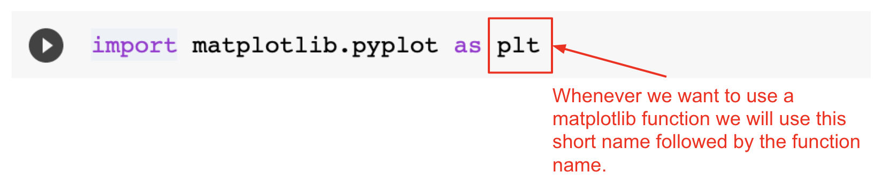
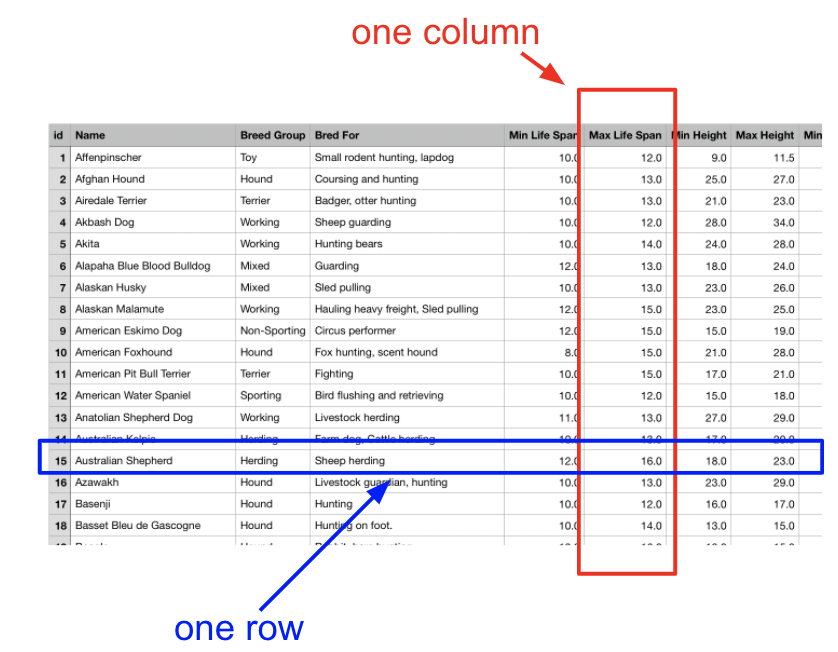
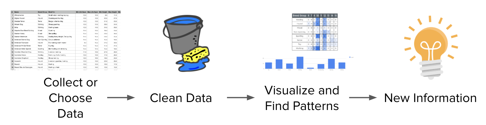

Lesson 3 - Notebooks and the Dog Dataset
At the end of this lesson, you will be able to:
- Explain why data scientists work in notebooks, and use a Colab notebook to explore a dataset.
- Describe what the pandas and matplotlib libraries do, and how a notebook imports them.
- Develop a set of questions that a given dataset can actually answer.
- Explain why charts help, and describe the steps of a data analysis.
Notebooks, now with data
You've been working in Colab notebooks since Unit 3, so this part should feel familiar! What's new in this unit is how data scientists use them. A notebook keeps your code, your notes, and the results all together in one document, and in this unit the results are mostly charts, so you can see a chart right next to the code that made it. That's why notebooks are the standard tool for data analysis. (Colab is Google's hosted version of the popular Jupyter Notebook, if you ever run into that name.)
One habit worth repeating, because it bites everyone at least once: when you open a notebook from a link, make your own copy first (File → Save a copy in Drive), or your changes will vanish when you close the tab.
Note: You don't need to become a Colab expert. The point of the unit is to find patterns in charts and draw conclusions you can defend. The code is supplied; your job is to pick a chart that fits the question and say what it shows.
Activity
Open this Notebook and make a copy.
Look around - what do you notice and wonder about? Follow the directions in the Notebook and make the changes.
Note: Python has a statement called import that pulls a library of extra functions into your program. Nearly every notebook in this unit starts by importing three of them: pandas, matplotlib.pyplot, and seaborn (a chart library built on top of matplotlib, imported under the short name sns).
Pandas
Pandas is the workhorse. It's an open-source data-analysis library for Python, and with pandas we'll load comma-separated files (CSVs, which are what you get when you export a spreadsheet as plain text) into dataframes, tables Python can work with, and then use its functions to summarize and plot them.
A single line of pandas reads a CSV file into a dataframe, figures out what type each column is, and hands you tools for selecting, summarizing, and plotting. The notebooks handle that setup so you can concentrate on the questions.
To get at pandas, the notebook imports it near the top with import pandas as pd. The as pd part gives the library a two-letter nickname, so instead of typing pandas.read_csv you type pd.read_csv. (Data scientists are not known for their patience with typing.) You don't need to memorize the import statements, and there's nothing to install. If you'd like to try it, add the line to the notebook you just made:
Matplotlib
The matplotlib Python library is what draws the actual pictures - high-quality graphs, charts, and figures. It's also how we'll add titles and legends to our charts.
Just like pandas, matplotlib has to be imported before you can use it. In your practice notebook, you can add it to the same code block as the pandas import (import matplotlib.pyplot as plt):

Now that you have a notebook, let's meet the dataset we'll use for most of the unit.
Dog data
Take a look at the Google Sheet below - it's full of data on dog breeds. Skim the different columns and let your curiosity wander. What specific questions could we answer with this data?
Try to make your questions specific. "What's interesting about dogs?" is hard to answer with a spreadsheet. "Do breeds with larger recorded maximum weights tend to have lower recorded maximum life spans?" or "Which breed group has the most records?" points at particular columns. Each row summarizes a breed, so we can compare those summaries; we can't use them to predict an individual dog's life span. A good test: can you name the column (or two) you'd need to look at? If you can, it's a question the data can speak to. If you can't ("which breed is the friendliest?"), the data might not have anything to say about it, and that's good to notice too.
Visualizations
Charts can help answer those questions, but why bother making them at all? Start with the raw table below. The cell where the “Max Life Span” column meets the “Australian Shepherd” row gives you exactly one fact: this dataset records 16 years as the Australian Shepherd breed's maximum life span. That is a value in a breed summary, not a guarantee or an absolute limit for an individual dog.

One fact at a time is slow going, and the spreadsheet holds hundreds of facts. A chart lets your eyes take in a hundred observations at once and spot patterns you'd never find scanning cells one by one. That's the next lesson, and we'll start with exactly this column.
Data analysis process
Data analysis tends to follow the same four steps, whatever the dataset:
- Collect or choose the data
- Clean the data
- Visualize and find patterns
- Obtain new information

Those look like a tidy straight line, but in practice you bounce around a lot. Collecting or choosing the data means deciding what counts: for us, someone already chose 105 breeds and a set of columns, and every question we ask is limited by those choices. Cleaning is fixing the messes, like a number typed as a word or two spellings of the same thing (Lesson 6 covers this, and it's usually the longest step). Visualizing is where the charts come in. And obtaining new information means saying, in plain words, what you learned, like "79% of these breed records list a maximum life span from 12 to 15 years." We haven't measured the ages of individual dogs, so we can't turn that into "79% of dogs live 12 to 15 years."
The bouncing around happens because a chart often shows you a problem you didn't know about. You make a bar chart, notice a weird bar for a value that shouldn't exist, and realize you're back at step 2. Or the chart answers your question and raises a better one, and you're back at step 1. That's normal. It's the process working.
Check for understanding!
Coming up next: One Column at a Time makes our first charts: bar charts and histograms.